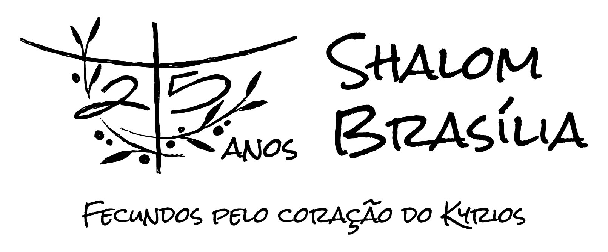
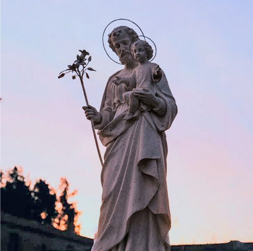

O termo "Kyrios" (Senhor) é central para nossa missão. Somos convidados a experimentar a fecundidade que vem do Coração de Cristo, sendo curados e transformados pela Sua oferta. Como diz a profecia cantada recebida:
"Eu sou Kyrios, fecundo esta terra no meu coração.
Eu sou o Kyrios, fecundo o teu coração no Meu coração."
Todos, como missão Brasília, respondemos:
"Kyrios, fecunda os nossos corações no Teu coração.
Kyrios, fecunda essa missão no Teu coração."
de uma missão:
na Rocha.
em Cristo, o Kyrios
pelo Seu Coração.
Gerando frutos visíveis e invisíveis
em Brasília.
Terra de esperança, de onde jorrará leite e mel
em esponsalidade.
Pela oferta esponsal nós vamos sendo curados
Como nos foi revelado na oração: o Reino de Deus está sendo edificado a cada dia nesta missão, com os que permanecem e por aqueles que passaram. Somos chamados a olhar nosso passado com misericórdia, nosso presente com amor e nosso futuro com esperança.
Acompanhe a programação dos 25 anos
Carregando eventos...
Momentos de oração e encontro com o Senhor
A Providência é a expressão concreta da comunhão de bens. Aqui você encontra as necessidades das casas comunitárias e os talentos dos irmãos disponíveis para servir.
Acessar Providência
Centros de Evangelização em Brasília
Acompanhe as novidades no Instagram